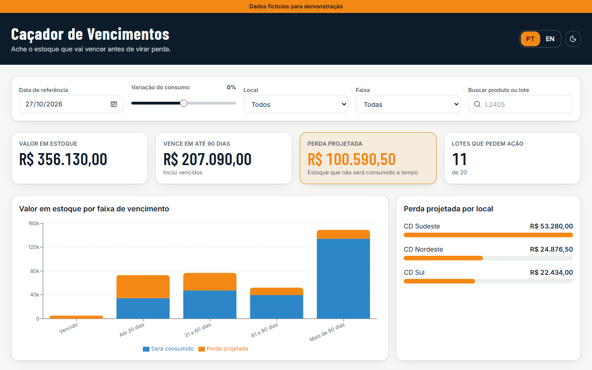

Por que isso importa
Na saúde, produto vencido não volta para a prateleira. Vira descarte, provisão de perda e, às vezes, falta do mesmo item em outro local que teria vendido tudo a tempo.
Olhar só a data de validade não basta. Um lote que vence em 60 dias pode estar seguro se o giro for alto, e um lote que vence em 200 dias pode estar perdido se outro lote do mesmo produto estiver na frente da fila.
Como funciona
- Fila por validade. Para cada produto e local, os lotes entram em fila pela data de validade. É o FEFO: o primeiro que vence é o primeiro que sai.
- O consumo gasta a fila. O consumo diário vai esvaziando um lote de cada vez. O lote seguinte só começa a ser consumido quando o anterior acaba ou vence.
- O que sobra vira perda. A quantidade que não for consumida até a validade é a sobra. Sobra vezes custo unitário é a perda projetada em reais.
- Uma ação por lote. Regras simples sugerem o que fazer, e o planejador pode trocar a ação e marcar o andamento.
Na tela dá para mudar a data de referência, simular uma variação de consumo de -50% a +50%, filtrar por local e importar um CSV próprio. Tudo roda no navegador.
Regras da ação sugerida
Testadas nesta ordem. A primeira que se aplica é a sugerida.
| Situação do lote | Ação sugerida |
|---|---|
| Já venceu | Bloquear e descartar |
| O consumo cobre o lote inteiro | Monitorar |
| Outro local consome a tempo pelo menos 20% da sobra | Transferir para esse local |
| Vence em até 30 dias | Provisionar perda e planejar descarte |
| Vence em até 90 dias | Ação comercial: desconto ou campanha |
| Vence em mais de 90 dias | Revisar o plano de compras do produto |
Exemplo com os dados da demo
Quatro lotes da base fictícia, com consumo sem variação.
| Lote | Vence em | Quantidade | Consumo | Sobra | Perda projetada | Ação |
|---|---|---|---|---|---|---|
| L2405 · Analgésico · CD Sudeste | 25 dias | 4.000 un | 60 un/dia | 2.500 un | R$ 21.250,00 | Transferir 1.050 un para CD Sul |
| L1120 · Vitamina C · CD Sudeste | 45 dias | 2.500 un | 30 un/dia | 1.150 un | R$ 21.160,00 | Ação comercial |
| L6612 · Xarope infantil · CD Nordeste | 95 dias | 1.800 un | 15 un/dia | 555 un | R$ 11.821,50 | Revisar plano de compras |
| L1128 · Vitamina C · CD Sudeste | 160 dias | 3.000 un | 30 un/dia | 0 | R$ 0,00 | Monitorar |
O L6612 vence em 95 dias, mas o lote L6604 do mesmo xarope está na frente da fila. Por isso ele só começa a ser consumido no dia 12 e sobram 555 unidades. Olhando só a validade, esse lote pareceria seguro.
Como construí
Escrevi a especificação com o Claude: os dados de exemplo, a fórmula do FEFO, as regras de ação e os números que a tela precisava mostrar. O Claude enviou essa especificação ao Lovable pelo conector oficial, e o Lovable gerou o app em React. Depois conferi os totais da tela contra a conta feita à mão.
- Valor em estoque: R$ 356.130,00
- Perda projetada: R$ 100.590,50
- Lotes que pedem ação: 11 de 20
O que aprendi
- Números de conferência valem mais que um prompt longo. Com os totais esperados na especificação, deu para saber na hora se o cálculo do app estava certo.
- FEFO muda a conta. Calcular cada lote sozinho subestima a perda, porque ignora que o lote seguinte espera o anterior acabar.
- Transferir só vale se o outro local consome a tempo. Por isso a regra exige que o destino absorva pelo menos 20% da sobra antes da validade.
Sobre os dados: produtos, lotes, custos e locais são fictícios. As regras foram simplificadas para a demonstração; num caso real, transferência e descarte seguem as regras sanitárias. O CSV importado é processado no navegador e não sai do seu computador.